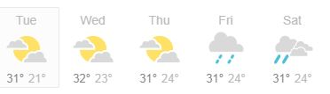

Preston Idaho
Weather Summary:
Currently: Sunny
High: 76F
Windchill: F
Humidity: Sunny
Windspeed: Sunny
Are Kittens bad for you?
Author: Max Cayanan
Studies have shown that kittens are not bad for you. They are friendly and relieves stress. For many cultures they are renowned for the good luck they bring their owners. You should adopt one right away when you see it. Studies have shown that kittens are not bad for you. They are friendly and relieves stress. For many cultures they are renowned for the good luck they bring their owners. You should adopt one right away when you see it. Studies have shown that kittens are not bad for you. They are friendly and relieves stress. For many cultures they are renowned for the good luck they bring their owners. You should adopt one right away when you see it.
5 Day Forecast
Rasanel's Weather Forecasting
Address: Preston, Idaho
Phone Number: 99999999
Email: rasanelforecasting@gg.com